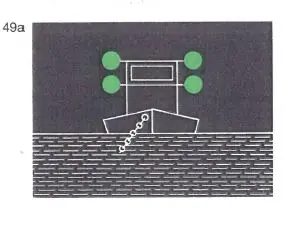
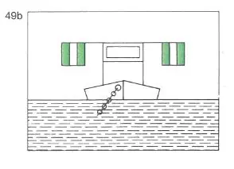
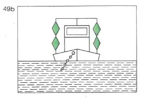
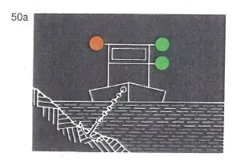
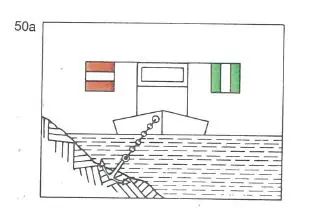
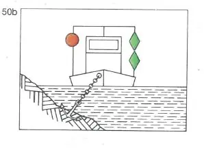
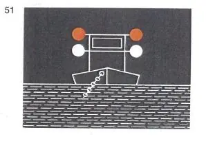
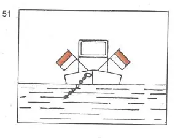
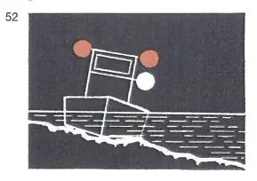
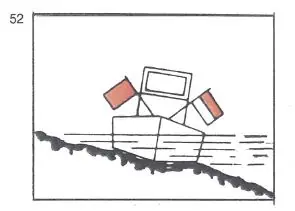

§ 3.25 Bezeichnung schwimmender Geräte bei der Arbeit sowie festgefahrener oder gesunkener Fahrzeuge(Anlage 3 Bild 49a, 49b, 50a, 50b, 51, 52)
Rheinschiffahrtspolizeiverordnung
1. | Schwimmende Geräte bei der Arbeit und Fahrzeuge, die im Fahrwasser Arbeiten, Peilungen oder Messungen ausführen und dabei stillliegen, müssen führen: | ||
a) | nach der Seite oder den Seiten, wo die Durchfahrt frei ist: | ||
- bei Nacht: | |||
zwei grüne gewöhnliche Lichter oder zwei grüne helle Lichter, |  | ||
- bei Tag: | |||
entweder das Tafelzeichen E.1 (Anlage 7) oder zwei grüne Doppelkegel etwa 1,00 m übereinander und gegebenenfalls | |||
 |  | ||
b) | nach der Seite, wo die Durchfahrt nicht frei ist: | ||
- bei Nacht: |  | ||
ein rotes gewöhnliches Licht oder ein rotes helles Licht in gleicher Höhe und von gleicher Stärke wie das nach Buchstabe a gezeigte oberste grüne Licht, | |||
- bei Tag: |  | ||
entweder das Tafelzeichen A.1 (Anlage 7) in gleicher Höhe wie das Tafelzeichen nach Buchstabe a | |||
oder einen roten Ball in gleicher Höhe wie der oberste Doppelkegel nach Buchstabe a, |  | ||
oder, wenn diese Fahrzeuge gegen Wellenschlag geschützt werden müssen, | |||
c) | nach der Seite oder den Seiten, wo die Durchfahrt frei ist: | ||
- bei Nacht: |  | ||
ein rotes gewöhnliches und ein weißes gewöhnliches Licht oder ein rotes helles und ein weißes helles Licht, das rote Licht etwa 1,00 m über dem weißen, | |||
- bei Tag: |  | ||
eine Flagge, deren obere Hälfte rot und deren untere Hälfte weiß ist, oder zwei Flaggen übereinander, die obere rot, die untere weiß, und gegebenenfalls | |||
d) | nach der Seite, wo die Durchfahrt nicht frei ist: | ||
- bei Nacht: | |||
ein rotes Licht in gleicher Höhe und von gleicher Stärke wie das nach Buchstabe c gezeigte rote Licht, | |||
- bei Tag: | |||
eine rote Flagge in gleicher Höhe wie die rot-weiße Flagge oder die rote Flagge auf der anderen Seite. | |||
Diese Zeichen sind so hoch zu setzen, daß sie von allen Seiten sichtbar sind. Die Flaggen können durch Tafeln gleicher Farbe ersetzt werden. | |||
2. | Festgefahrene oder gesunkene Fahrzeuge müssen die Bezeichnung nach Nummer 1 Buchstabe c und d führen. Liegt ein gesunkenes Fahrzeug so, dass die Zeichen nicht auf ihm angebracht werden können, müssen sie auf Nachen, Tonnen oder in anderer geeigneter Weise gesetzt werden. | ||
 |  | ||
3. | Die zuständige Behörde kann von der Führung der Bezeichnung nach Nummer 1 Buchstabe a und b befreien. |